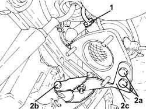
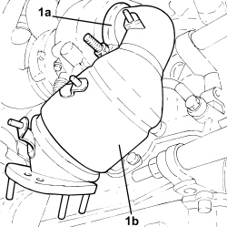
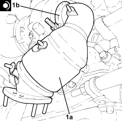
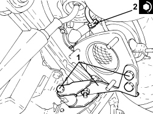
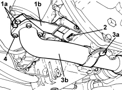
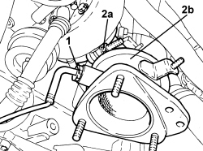

1080B62 CATALYTIC CONVERTER - R + R
- Path
- Procedures > 10 ENGINE > 1080 EMISSION CONTROL SYSTEM > 1080B EXHAUST EMISSION CONTROL SYSTEM > 1080B62 CATALYTIC CONVERTER - R + R
- Kind
- repair procedure (removal / refitting; the operation number is the code)
- Applies to
- engines: 1.9 JTD 8V, 1.9 JTD 16V, 2.4 JTD 20V; all production periods
- Interactive page
- https://sloeber94.github.io/elrnDB/alfa/159/en/#/939010619
Applies to: engines: 1.9 JTD 8V, 1.9 JTD 16V; all production periods
 Removing
Removing
 Refitting
Refitting- Position the vehicle on a lift.
Op. 1084A16 OIL DIPSTICK PIPE - R.R
Op. 1048A50 TURBOCHARGER AIR INTAKE PIPE - R.R.
Op. 1088D14 UPPER RADIATOR COOLANT OUTLET HOSE - R.R.
Op. 1088D10 LOWER RADIATOR COOLANT OUTLET HOSE - R.R.
Op. 1072C44 EXHAUST MANIFOLD HEAT SHIELD - R+R
Op. 7055B54 UNDER ENGINE PROTECTION/GUARD - R.R.
Op. 1076B72 INTERMEDIATE EXHAUST PIPE WITH HOSE SECTION - R+R
1. Undo the catalytic converter overheating thermal coupling and remove it.
2. Undo the bolts (2a), (2b) and remove the catalytic converter mounting bracket (2c).

Applies to: engines: 1.9 JTD 8V, 1.9 JTD 16V; all production periods
1. Loosen the collar (1a) and remove catalytic converter (1b).

Applies to: engines: 1.9 JTD 8V, 1.9 JTD 16V; all production periods
Refitting
Removing1. Place the catalytic conveter (1a) in its housing and fasten it tightening the collar (1b) to the recommended torque.
Component | Fastening | dia | Value (daNm) | Validity |
|---|---|---|---|---|
Catalytic converter | Collar nut | M10 | (turbocharger and exhaust manifold side) 2.2 - 2.6 | 1.9 JTD 8V 1.9 JTD 16V 2.4 JTD 20V |

Applies to: engines: 1.9 JTD 8V, 1.9 JTD 16V; all production periods
1. Place the catalytic conveter mounting bracket in its housing and secure it using the bolts.
2. Position the catalytic converter overheating thermal coupling in its housing and tighten it to the recommended torque.
Component | Fastening | dia | Value (daNm) | Validity |
|---|---|---|---|---|
Thermal coupling signalling catalytic converter overheating | - | M14 | (catalytic converter side) 4.5 | 1.9 JTD 8V 1.9 JTD 16V 2.4 JTD 20V |

Applies to: engines: 1.9 JTD 8V, 1.9 JTD 16V; all production periods
Op. 1076B72 INTERMEDIATE EXHAUST PIPE WITH HOSE SECTION - R+R
Op. 7055B54 UNDER ENGINE PROTECTION/GUARD - R.R.
Op. 1072C44 EXHAUST MANIFOLD HEAT SHIELD - R+R
Op. 1088D10 LOWER RADIATOR COOLANT OUTLET HOSE - R.R.
Op. 1088D14 UPPER RADIATOR COOLANT OUTLET HOSE - R.R.
Op. 1048A50 TURBOCHARGER AIR INTAKE PIPE - R.R.
Op. 1084A16 OIL DIPSTICK PIPE - R.R
- Remove the vehicle from the lift.
Applies to: engines: 2.4 JTD 20V; all production periods
Removing
RefittingOp. 1016A10 SOUND-PROOFING COVER - R.R
Op. 1048A42 SLEEVE FROM FLOW METER TO TURBO CHARGER AIR INLET PIPE - R + R
Op. 1048A51 TURBOCHARGER RIGID AIR INLET HOSE - R.R.
Op. 7055B54 UNDER ENGINE PROTECTION/GUARD - R.R.
1. Unscrew the bolts (1a) securing the bracket (1b) to the catalytic converter.
2. Undo the bolt securing the bracket (1b) to the oil sump and remove it.
3. Undo the bolt (3a) securing the exhaust pipe (3b) to the engine oil sump.
4. Undo the nuts securing the exhaust pipe (3b) to the catalytic converter and move it to one side.
- Remove the gasket.

Applies to: engines: 2.4 JTD 20V; all production periods
1. Undo the exhaust gas temperature sensor and remove it from the catalytic converter.
2. Loosen the collar (2a) and remove the catalytic converter (2b) from the turbocharger.

Applies to: engines: 2.4 JTD 20V; all production periods
Refitting
Removing- Place the catalytic conveter in its housing and fasten it to the turbocharger tightening the collar to the recommended torque.
Component | Fastening | dia | Value (daNm) | Validity |
|---|---|---|---|---|
Catalytic converter | Collar nut | M10 | (turbocharger and exhaust manifold side) 2.2 - 2.6 | 1.9 JTD 8V 1.9 JTD 16V 2.4 JTD 20V |
- Place the exhaust gas temperature sensor in its housing on the catalytic converter and tighten it to the recommended torque.
Component | Fastening | dia | Value (daNm) | Validity |
|---|---|---|---|---|
Thermal coupling signalling catalytic converter overheating | - | M14 | (catalytic converter side) 4.5 | 1.9 JTD 8V 1.9 JTD 16V 2.4 JTD 20V |
- Place the exhaust pipe, complete with new gasket, back in its housing and secure it to the catalytic converter tightening the nuts to the recommended torque.
Component | Fastening | dia | Value (daNm) | Validity |
|---|---|---|---|---|
Intermediate exhaust pipe with flexible section | Nuts | M8 | (catalytic converter side) 2.2 - 2.6 | 1.9 JTD 8V 1.9 JTD 16V 2.4 JTD 20V |
- Tighten the bolt securing the exhaust pipe to the engine oil sump.
- Tighten the bolt securing the catalytic converter mounting bracket to the engine oil sump.
- Tighten the bolts securing the catalyzer mounting bracket to the catalytic converter.
Op. 7055B54 UNDER ENGINE PROTECTION/GUARD - R.R.
Op. 1048A51 TURBOCHARGER RIGID AIR INLET HOSE - R.R.
Op. 1048A42 SLEEVE FROM FLOW METER TO TURBO CHARGER AIR INLET PIPE - R + R
Topics linked from this page (10)
- 1016A10 SOUND-PROOFING COVER - R.R
- 1048A42 SLEEVE FROM FLOW METER TO TURBO CHARGER AIR INLET PIPE - R + R
- 1048A50 TURBOCHARGER AIR INTAKE PIPE - R.R.
- 1048A51 TURBOCHARGER RIGID AIR INLET HOSE - R.R.
- 1072C44 EXHAUST MANIFOLD HEAT SHIELD - R+R
- 1076B72 INTERMEDIATE EXHAUST PIPE WITH HOSE SECTION - R+R
- 1084A16 OIL DIPSTICK PIPE - R.R
- 1088D10 LOWER RADIATOR COOLANT OUTLET HOSE - R.R.
- 1088D14 UPPER RADIATOR COOLANT OUTLET HOSE - R.R.
- 7055B54 UNDER ENGINE PROTECTION/GUARD - R.R.